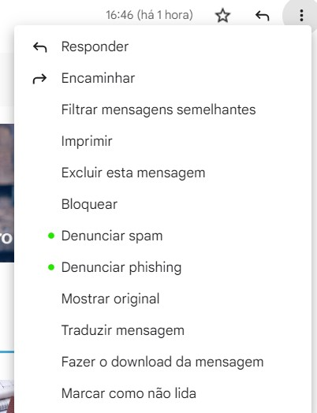

Segurança na internet: 10 dicas para você se proteger
A todo momento estamos conectados, e ter segurança na internet é essencial e extremamente importante, pois, por meio dessa seguridade, mantemos nossa privacidade e protegemos nossos dados.
Além disso, a segurança na internet também ajuda a evitar o acesso não autorizado aos sistemas e às redes de computadores, ações muito comuns, que pode levar à perda de dados ou à violação da privacidade.
Você sabia que o Brasil é o quinto país que mais ocorrem os crimes cibernéticos no mundo? Somente em 2021, o país registrou 3,7 tentativas de fraude eletrônico por minuto. Isso mesmo, por minuto!
Para aprender mais sobre o assunto, confira ao longo deste conteúdo o que é segurança na internet, os principais crimes e dicas para você se proteger. Boa leitura!
Crimes na internet: entenda o cenário
De acordo com levantamento feito pela empresa de cibersegurança Norton em parceria com o The Harris Poll, o Brasil é o terceiro país com mais dispositivos infectados por ameaças.
A pesquisa destaca ainda que mais da metade (58%) dos brasileiros entrevistados afirmaram que já sofreram algum crime cibernético em 2021. É estimado que 71 milhões de brasileiros já caíram em algum golpe ou fraude virtual nos últimos 12 meses.
Alguns exemplos de crimes cibernéticos são o phishing, o vírus de computador, o ataque de negação de serviço, a pirataria de software e o roubo de informações pessoais.
10 dicas de segurança na internet para aplicar no seu dia a dia
Para te ajudar a ter mais segurança na internet, e se precaver dos males do mundo digital, reunimos a seguir 10 dicas para te ajudar a se proteger na internet. Confira.
1. Utilize softwares originais
Os softwares originais são importantes, porque garantem que o seu computador funcione de
forma correta e segura. Além disso, eles são atualizados regularmente, para garantir que você
esteja sempre usando a versão mais recente do aplicativo.
Não compre softwares piratas, seja no comércio online ou de rua, esse tipo de produto pode carregar algum vírus e danificar o seu computador.
2. Use um bom antivírus
Os antivírus são essências, porque eles podem detectar e remover os vírus do seu computador. Se
considerarmos que esses programas maliciosos costumam causar muitos problemas, que incluem a perda
de arquivos, o roubo de dados, e muitos outros, usar um antivírus torna-se algo imprescindível.
3. Evite conexões em redes de Wi-Fi públicas
Wi-Fi públicas são uma ameaça à segurança de qualquer um que utilize essas redes.
O principal motivo disso é que essas redes são inseguras, e qualquer pessoa pode se conectar a elas e ter acesso às informações que você está enviando ou recebendo. Logo, qualquer hacker pode facilmente acessar seus dados ao usar uma rede de Wi-Fi pública.
4. Só insira dados em sites confiáveis
sites da Internet são considerados confiáveis se atenderem aos seguintes critérios:
Deve possuir um domínio registrado e um endereço IP válido;
Deve contar com um certificado SSL válido;
Deve ter um código-fonte bem estruturado e organizado;
Deve ser hospedado em um servidor seguro e confiável.
Além disso, verifique se aparece um cadeado ao lado do endereço eletrônico. Para checar a confiabilidade de um site, confira também se o site tem um endereço que começa com https://.
5. Desconfie de e-mails desconhecidos
E-mails estranhos podem ser um indicativo de tentativas de phishing ou de outros tipos de
ataques cibernéticos. Se receber um e-mail suspeito, é importante não clicar em nenhum link ou
anexo presente nele e não responder ao remetente..
Além disso, é recomendável que você sinalize e denuncie como spam ou phishing. A ação pode ser feita se você utilizar o gmail, por exemplo. Veja na imagem abaixo:
6. Utilize autenticação de dois fatores
A autenticação de dois fatores é essencial, pois ela fornece uma camada extra de segurança
para as suas informações.
Quem utiliza a autenticação de dois fatores, precisa fornecer duas informações para comprovar a sua identidade — geralmente uma combinação de um nome de usuário mais senha e um código de segurança gerado por um dispositivo de segurança.
Isso significa que, mesmo que um hacker consiga obter acesso ao seu nome de usuário e senha, ele ainda não conseguirá acessar a sua conta sem o segundo fator de autenticação.
Os meios para a autenticação de dois fatores mais conhecidos são:
Google Authenticator;
Microsoft Authenticator;
LastPass Authenticator.
7. Não utilize senhas óbvias
Não use seu nome, dados pessoais ou ainda o mais conhecido “12345” como senha para coisas
importantes.
Para criar senhas fortes, você pode usar uma combinação de letras, números e símbolos. Além disso, escolher senhas longas também é uma forma de evitar que outras pessoas consigam acessar os seus dados.
Dica: é recomendável usar um gerenciador de senhas para criar e armazenar senhas com mais segurança.
8. Evite a superexposição nas redes sociais
A exposição nas redes sociais pode se tornar um problema, isso porque, trata-se de um
ambiente inseguro, onde, sem perceber, você pode estar se expondo a riscos desnecessários.
Qualquer um pode ter acesso às suas informações pessoais nessas redes, pensando nisso, temos algumas dicas rápidas:
Ao viajar, jamais sinalize que a casa está sozinha;
Evite compartilhe localização em tempo real;
Jamais publique informações pessoais como nome completo, data de nascimento, CPF, RG e outros.
9. Atenção ao fazer downloads
Existem muitos sites mal-intencionados que oferecem downloads que podem conter vírus ou outros tipos de malware. Por isso, faça o download de arquivos somente em sites confiáveis.
Antes de iniciar o download de qualquer arquivo, certifique-se de que você está usando um bom software antivírus e que ele está atualizado. Além disso, tenha também um firewall ativo, a fim de bloquear quaisquer tentativas de invasão.
10. Cuidado com os anexos: em redes sociais, e-mail, etc.
Os anexos de e-mails são frequentemente usados para enviar vírus. Para se proteger, é importante tomar alguns cuidados antes de iniciar o download de qualquer anexo.
Veja como se proteger:
Verifique se o remetente é confiável. Se você não conhece o remetente, ou se o e-mail parece suspeito, não baixe o anexo.
Verifique o tamanho do arquivo. Arquivos grandes podem ser mais suspeitos, pois podem conter mais código malicioso.
Verifique o tipo do arquivo. Arquivos executáveis (.exe, .bat, .com, etc.) e arquivos de macro de documentos do Microsoft Office (.doc, .xls, .ppt) são particularmente suspeitos, pois podem conter código malicioso.
Antes de abrir um arquivo, verifique se o seu software antivírus está atualizado e escaneie o arquivo para verificar se há algum vírus.